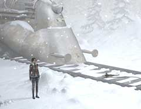
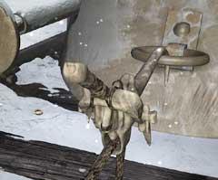

| 概要 | 地図 |
| 淡いヒント集 | ヒント集 | 的確なヒント集 |
| 攻略最短ルート |
| 場所選択に戻る |
ユコール族の村(後半)
|

夢の世界から戻ったあなたは、まず機関車の移動をしなくてはならない。巨大な鉄のかたまりを移動させるには、ユコール族の村に置いてある巨大な巻き取り装置を使う。 そのためには、まず巻き取り装置と機関車をつなぐフックを取り付けなくてはならない。 あなたがフックを持ち上げようとしても、重すぎて動かせないだろう。そうなると、村人の協力を仰ぐしかない。 しかし、村人は機関車に近づかない。彼らは、機関車が怖いのではなく、中に乗っているオスカーが怖いのだ。オスカーが彼らに対して友好的であることを示すために、「ユコール族の仮面」をかぶせてみよう。 この仮面をかぶっていれば、ユコール族の村人も心を許して手伝ってくれるはずだ。 
村人のおかげで、フックを機関車にかけることはできた。しかし、機関車を引っ張るにはまだやらねばならないことがある。 巻き取り装置と機関車を結ぶロープは完全にかみ合っていないのだ。もし、疑っているのならば実際に巻き取り装置を動かしてみるといい。・・・ほら、機関車が動かない。

そこで、機関車とフックの接合部を見て欲しい。画像のように奇妙なレバーが取り付けられている。これは、ロープを動かし、ピンッと張るための道具である。 これを使い、ロープを張り巻き取り装置としっかりとかみ合わせてみよう。 このように、ロープがまっすぐ張るはずだ。
| 次へ >> |
|
| 場所選択に戻る |
| 概要 | 地図 |
| 淡いヒント集 | ヒント集 | 的確なヒント集 |
| 攻略最短ルート |
Syberia II
| 目次へ戻る | ページの上部へ |